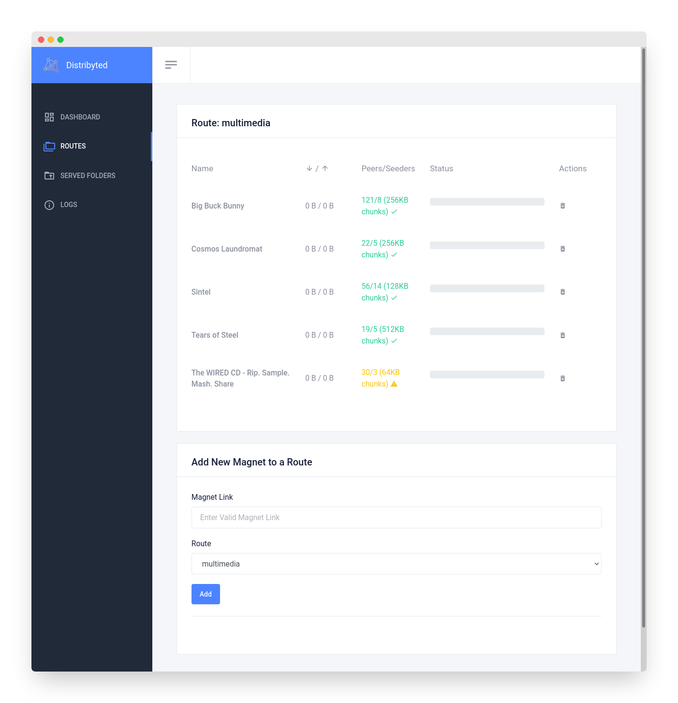

Getting Started
Installation¶
Using the binary¶
Get the latest release from [releases][releases-url] page or download the source code and execute make build.
Run the program: ./distribyted-[VERSION]-[OS]-[ARCH]
Defaults are good enough for starters, but you can change them. Here is the output of ./distribyted -help:
NAME:
distribyted - Torrent client with on-demand file downloading as a filesystem.
USAGE:
distribyted [global options] [arguments...]
GLOBAL OPTIONS:
--config value YAML file containing distribyted configuration. (default: "./distribyted-data/config.yaml") [$DISTRIBYTED_CONFIG]
--http-port value HTTP port for web interface (default: 4444) [$DISTRIBYTED_HTTP_PORT]
--fuse-allow-other Allow other users to acces to all fuse mountpoints. You need to add user_allow_other flag to /etc/fuse.conf file. (default: false) [$DISTRIBYTED_FUSE_ALLOW_OTHER]
--help, -h show help (default: false)
Prerequisites on windows¶
Download and install WinFsp.
Using Docker¶
Docker run example:
docker run \
--rm -p 4444:4444 -p 36911:36911 \
--cap-add SYS_ADMIN \
--device /dev/fuse \
--security-opt apparmor:unconfined \
-v /tmp/mount:/distribyted-data/mount:shared \
-v /tmp/metadata:/distribyted-data/metadata \
-v /tmp/config:/distribyted-data/config \
distribyted/distribyted:latest
Docker compose example:
distribyted:
container_name: distribyted
image: distribyted/distribyted:latest
restart: always
ports:
- "4444:4444/tcp"
- "36911:36911/tcp"
volumes:
- /home/user/mount:/distribyted-data/mount:shared
- /home/user/metadata:/distribyted-data/metadata
- /home/user/config:/distribyted-data/config
security_opt:
- apparmor:unconfined
devices:
- /dev/fuse
cap_add:
- SYS_ADMIN
Usage¶
After executing and load all torrent or magnet files, a web interface will be available at http://localhost:4444
It contains information about the mounted routes and torrent files like download/upload speed, leechers, seeders...
Configuration File¶
You can see the default configuration file with some explanation comments here.
Routes¶
Here there is a list of all available routes with their torrents and some info. You can add and remove torrents from here too.

Servers¶
Servers is a way to generate magnet files from folders. All servers configured using the config yaml file will be here. When some data is changed on these folders, a new magnet URI will be generated. You can share that magnet URI with anyone to share these files.

Logs¶
You can check logs in real time from the web interface: